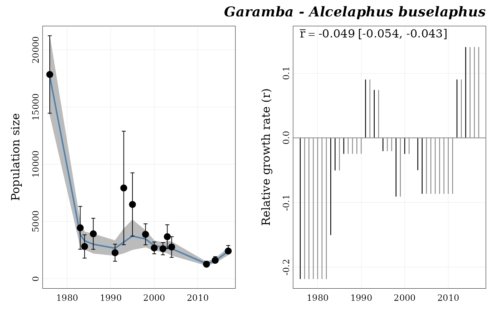

This function plots a panel of two graphics for one BUGS model
(previously generated by fit_trend()):
on the left side, the population trend estimated by the Bayesian model (blue line) with the 95% CI (gray envelop). Dots (with intervals) represent converted counts passed to the model (with the 95% CI);
on the right side, a bar plot of estimated relative growth rates (r) by date. Dark bars are real estimated r.
plot_trend(series, title = TRUE, path = ".", path_fig = ".", save = FALSE)
| series | a |
|---|---|
| title | a |
| path | a |
| path_fig | a |
| save | a |
No return value.
## Load Garamba raw dataset ---- file_path <- system.file("extdata", "garamba_survey.csv", package = "popbayes") garamba <- read.csv(file = file_path) ## Create temporary folder ---- temp_path <- tempdir() ## Format dataset ---- garamba_formatted <- popbayes::format_data(garamba, path = temp_path) #> ✔ Conversion data found in 'data'. #> ✔ Detecting 10 count series ## Select one serie ---- a_buselaphus <- popbayes::filter_series(garamba_formatted, location = "Garamba", species = "Alcelaphus buselaphus") #> ✔ Found 1 series with 'Alcelaphus buselaphus' and 'Garamba'. # \donttest{ ## Fit population trends (requires JAGS) ---- a_buselaphus_mod <- popbayes::fit_trend(a_buselaphus, path = temp_path) #> Compiling data graph #> Resolving undeclared variables #> Allocating nodes #> Initializing #> Reading data back into data table #> Compiling model graph #> Resolving undeclared variables #> Allocating nodes #> Graph information: #> Observed stochastic nodes: 15 #> Unobserved stochastic nodes: 15 #> Total graph size: 227 #> #> Initializing model #> ## Plot estimated population trend ---- popbayes::plot_trend(series = "garamba__alcelaphus_buselaphus", path = temp_path)  # }